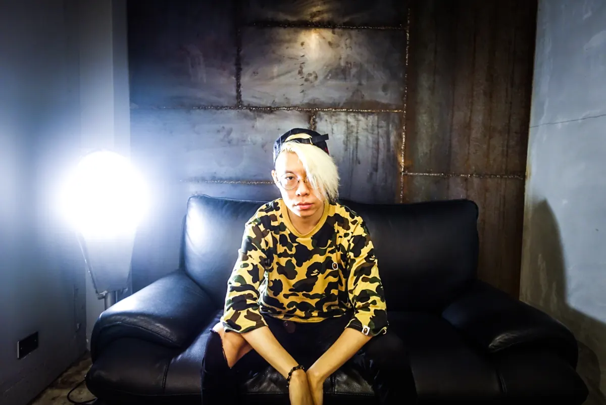

你是否聽過今年五月發行，紅遍大街小巷的「J.SHEON 街巷」呢？今天強力訪問到的，就是 J.SHEON 首張同名專輯的主要製作人之一，剃刀蔣。跳蛋音樂工廠旗下的創作人們各有不同的長處和特色。當這些有想法有態度的音樂人聚集在一塊 ，就是能夠發想出爆炸性的結果。果然 J.SHEON 的新歌一上架沒多久，就已出現在各大音樂平台的排行榜上。本篇專訪中，剃刀和我們分享關於這張專輯的製作概念。喜歡這張專輯的你絕不能錯過這篇！
今天的訪談主角剃刀蔣，早期本身也是以饒舌歌手的身份接觸音樂，因為開始自學 beat making 而對製作產生興趣，後來慢慢往音樂製作人的方向發展，曾經與葛仲珊、大支、韓庚等知名藝人合作過。近期主要都忙於製作和編曲案，幾乎所有的時間都在這些幕後的音樂工作上。而剃刀本人也很開心能夠充實地接受多位藝人或網路歌手的合作邀約，這代表在音樂上已經建立出自己的個人特色。在嘻哈音樂圈已經超過十年的他，對於這個曲風在台灣的演變也是有自己獨特的看法。他也與我們分享作為一名製作人時，應扮演著什麼樣的角色。趕快來跟小編一起和他聊音樂吧！

Q: 為什麼會叫做「剃刀」？
「我一開始是從嘻哈的曲風開始接觸音樂製作的。嘻哈音樂早期都是以取樣、sample 為主，取樣一些老歌或是聲音。取樣的一個很大的關鍵就是要如何將你要的音樂解構。取一段聲音，要去切。這個過程就是一直在 chop 東西，像日本料理一樣。我就把這個作為一個自己的標誌，所以這個名字跟音樂風格是有很直接的關係的，是一個風格延伸出來的名字。」
Q: 會怎麼形容自己的音樂風格？最喜歡做哪一類？
「嘻哈、R&B、舞曲，從這一類的延伸都有。其實每個音樂人都是透過自己熟悉的風格去看其他的音樂。你一定會專精某部分，但是可能會通其他的東西。從小聽到大，作到大，所以都是喜歡的音樂類型。你透過這個風格看東西。對它已經不是純粹的喜歡的問題了，而是沒有它你不行。」
Q: 可以聊聊當初展開音樂製作的故事嗎？從大概幾年前開始製作音樂？
「我本來不是製作音樂的。一開始是饒舌歌手，但是因為那個時候網路也沒有那麼發達，找不到一些可以用的音樂去唱。那個時期也沒有什麼人會去自己做，所以就自己試試看。結果做一做，嘻哈的饒舌歌手就發現，你會做這件事情，會做自己的beat，自己唱。一開始是希望可以有自己的歌。後來越來越多人想要我幫他做，也發現其實編曲還滿好玩的。做到後面都沒有在做自己的東西了，都是幫別人做，然後研究一些技術上的知識。變成不會只是編曲，還要知道怎麼去寫歌、混音、幫人家錄東西，做音樂就慢慢變成是一個工作。那時候也沒想那麼多，只是覺得饒舌很帥。但這個可以支撐你生活的時候，就會開始考慮是不是能可以把音樂當作自己的工作責任。接觸音樂的時間，超過十年的時間了。入行的話差不多六年的時間。」
Q: 做電音或舞曲的音源如此多，如何記住音源，以便縮短完成一首歌的時間？
「我想每個製作人可能都有一個自己的分類方式。像我自己的 pad 就會去分哪些比較暗的、亮的。我很熟的音色大概記得四五百個。記得區塊的有一千到兩千個之間。但是因為每次增加新的音色之後，你就會想個方法記起來，可能會寫起來。但是通常我都是全部靠腦袋記起來。」
Q: 對於音色有什麼特別的喜好跟要求嗎？
「音色聽起來要髒髒的，不要那麼塑膠跟乾淨。太乾淨的話我會想要把它弄髒。音色這種東西是相對的。你在編一首歌的時候，當你的鼓跟 pad 都是髒的，可能就會有一個東西是很乾淨，它就會很透，就會變成特色，不會都全部是髒的。這是一個比例的問題。但是通常我到最後都是髒的部分比較多。（笑）音色音源這種東西，網路很多。但是有一些是你可以去創造的。把某一個聲響加某一個聲響，它可能就不會是屬於這兩個的其中一個。例如你去拿一個鐵門在拉的聲音，你把它的頗行拉到很長很長，pitch 降低的時候，它可能變成很像怪物在叫的聲音。你不需要去實際找一個怪物出來。」
Q: 可以和我們分享街巷的《You’ll never know》，這首歌的編曲概念跟特點嗎？
「它是屬於現在這個時代 2017 年的 R&B 風格。它的音樂結構就是，鼓會比較突出一點，pad 和 bass 的部分會用比較多。聽起來可能比較不會那麼的明亮。因為通常 PB R&B 是一種偏暗的 R&B 風格。當初在做這一首歌的時候，beat 一出來，就跟街巷討論我們要寫比較掙扎、慘烈的歌。通常只有在歌詞發生這件事的時候你會比較掙扎糾結，但是它也不是像傳統比較 ballad 那種糾結的寫法，比較強勢一點，也比較屬於他的歌路。因為感情本來就是多愁。有些人糾結的時候是比較屬於被動型的，而這種歌比較有侵略性。這張專輯裡面有很多真人真實，我們很多的取材都是來自身邊的人事物。但很多事不能講。（笑）」
Q: 平常作曲或編曲的順序與方法？
「實際在做編曲時，我會先選大鼓、再小鼓，再選 hi-hat，節奏有的時候，再開始加 bass 或 pad的根音，可能跟和弦同時進行，這樣子你就等於是整首歌的骨頭都有了，就可以開始找它的肉的部分。你可能找一些邊邊的音色，去做一些插音，點綴。可能做中間或後期的時候再去選出最主要，這首歌的聲音特色。
發想一首歌怎麼開始的話，我們平常會記錄一些生活上的事件。不見得會馬上寫那首歌，可是會把它記下來，下次有感覺或可以寫的時候就會把這個主題拿出來。做街巷的專輯，其實我們等於是把身邊周遭的人事物先記錄下來，或是想。在專輯還沒做之前，我們就已經開始在 run 很多音樂的東西了。很多都是有平常講一些垃圾話啊、誰發生了什麼事情，我們就把它寫下來。等真的做出來的時候就想說，哇靠，原來你還記得這件事情。還滿有趣的。我覺得你要能夠去把這個東西（生活中的點滴）放到音樂裡面，這樣人家才會去相信，這些東西是真的，會有共鳴。當然有很多厲害的人是可以去創造不曾發生過的事情還令人有共鳴的，但是我們之所以會這樣記錄主要是因為這樣好玩，不見得是要滿足某一個族群的共鳴才去做首歌。但還是會針對製作的歌手去做微調。有些歌手可以這樣做，但是每個人的習慣不一樣。我跟街巷本來就是朋友。我們會有一個屬於自己的製作音樂的方式。通常做嘻哈這一塊的比較會重視這一個東西，就是 lifestyle。」
Q: 剃刀在台灣接觸嘻哈音樂至今，有感覺到什麼明顯的趨勢變化嗎？
「其實嘻哈在台灣，比較只能算是一種風格。如果我這樣講的話，會有很多活在那樣世界的人沒辦法認同。但是因為這個就是市場大小的問題。通常你如果把嘻哈放在音樂的環境裡面它確實就是一種風格。但是如果不放在音樂裡面看，實際上在台灣是有很多人，是活得很嘻哈的。因為我們在這個環境裡面起來的。我們知道有哪些人在做這些事情。台灣是早期從熱狗、大支，到現在一直都還有在做。美國、日本的音樂一直不斷地影響我們。目前台灣嘻哈的狀態，還是處在一個被受影響的階段。還沒有去影響到台灣以外的環境。現在中國大陸的嘻哈有自己的文化，運作的也很好，因為跟著他們其他產業一起起飛。現在台灣也是受到大陸嘻哈的影響。
近年多了比較多嘻哈的『商業』歌手，但是我沒有覺得這樣不好，因為你越多這樣的人出來，它越會被受到重視。現在美國那邊嘻哈的確是主流，韓國也是，中國大陸的嘻哈也發展得非常快速。日本已經發展很久一段時間了，都維持在穩定。因為這個世界趨勢，當然台灣的年輕人也會被受到影響。當年輕人也喜歡這個東西的時候，娛樂產業就會重視年輕人喜歡的音樂曲風，自然就會重視嘻哈。嘻哈就是再來要紅的東西。」
Q: 剛剛提到嘻哈是再來要紅的曲風，對於唱片公司培訓許多嘻哈歌手的「練習生」，是否有什麼看法？
「我覺得音樂是結果論。你拿出好東西，不會有人在乎你的過程怎麼出來的。嘻哈是一個很厲害的東西。它是一個好壞都能被吸收的一個文化。因為嘻哈從最最一開始就是從偷，取樣別人的東西，先偷，才會到現在這樣子。它可以去解構一個人的東西，再說是自己的，然後嘻哈也是不斷地演進、淘汰，新的人去淘汰舊的，再說自己是最好的，直到這批人又被另一批人淘被。所以我覺得嘻哈是很容易接受挑戰的。你去製造一大隊練習生出來，自然會有看不下去的一票人來挑戰。這樣競爭，也不錯啊。反正不管怎麼樣，就是要去做。本身就是適者生存的環境。你能製造出這樣的環境，市場變好，那這樣超棒的。在台灣，畢竟這就是屬於一個外來文化，就是一個娛樂。尤其在音樂裡面，現階段就是一種風格，人家不會跟你講是一種精神。這個曲風可能是整個文化演進出來的結果，你要直接把那個抄過來，那當然這個在他們眼裡只能算是一種風格，不算是一種文化。」
Q: 剃刀專研嘻哈很久了，擔任製作人時，要如何拿捏自己的想法與合作對象/公司的在音樂製作上的共識？
「有時候面對到比較商業的唱片公司的需求，跟市場的需求，就只能提供技術層面的建議，不能告訴他這樣沒有嘻哈的精神。他們不會理你的。你要說，我把這個聲音，這個鼓的節奏弄成這樣，你會不會覺得這樣比較有態度？他們覺得有，那你的工作就成功了。今天做工作其實是在提供別人解決方案，解決別人的問題。當如果你的位置到了一個你替這個文化解決問題的時候，那可能你講話的立場又不一樣了。
擔任藝人的製作人，都是以幫他們解決問題的出發點去溝通。他們會找你也是因為他們覺得你可以幫他解決這個他需要的東西。每個製作人有自己的風格。當然你在推起你的音樂的路程中已經建立了一個個人的風格，代表你已經是解決了自己個人的問題。你現在等於是要讓自己沒有問題，他們才會來找你。我會以製作人的身份提供我之前走這條路面對到什麼問題去給唱片公司跟歌手。現在的位置就是處於在必須要懂歌手在想什麼，又要知道唱片公司要什麼。因為有時候藝人重視的東西唱片公司不見得會理解。但是你做為一個中間的人，你如果讓他們兩個直接溝通的話，有時候可能會很危險。（笑）你去中間做翻譯，要去讓他們清楚自己的立場，他們就比較能夠互相理解。你必須要讓他覺得，其實我們是真正的為你好，站在你的立場幫你想這件事，而不是只為了達到我個人的目的。
有一些事情要看歌手的個性。例如遇到做嘻哈起來的歌手時，要將對方視為是合作夥伴，而不是把自己當作是前輩或製作人的立場給他們建議。我跟街巷就是朋友和夥伴，雖然我是他的製作人。有時候在錄音室很好笑，我們會堅持自己想的，我會覺得你這一句一定要唱成那樣子，他會說我覺得那樣沒有問題啊。我會跟他說可是我是製作人。他就會好啦你是製作人你最大。有時候會開一些玩笑。當然你跟歌手也不見得跟他說我是製作人他就會理你。他可能就是唱他要的東西。你還要對他們上面的經紀人跟唱片公司交代，所以要找到很好的中間值。要懂得看情況，自己不能太有個性。」
Q: 可以聊聊在近期的作品中，有哪一個令你感到特別有成就感或印象深刻的嗎？
「一定是街巷的。」
Q: 街巷專輯的哪一首歌？
「我自己最喜歡，最有感覺的其實是《啵啦》這一首。因為這一首有很多的故事在裡面。這是我們身邊共同朋友的一個故事，而且我們在完成這首歌的時候，這個人還不知道。這個人是一個導演，我們是把歌做好之後，才跟他說我們要找你拍一支ＭＶ。我們開一個會來研究，結果他聽到歌越聽越奇怪才發現，這怎麼會是在講我！？這首歌從音樂的結構上和內容我都有做一些以往自己不去做的。這比較偏向雷鬼，但是又是壓一個Ｒ＆Ｂ的 chord。那樣子的音樂結構來唱饒舌，唱這種故事，很多都是我第一次嘗試。這首歌也很幸運被作為他的主打歌之一。我那時候就是跟街巷和我老闆講，這首歌一定要打，太屌了。」
Q: 寫歌時有特別喜歡用什麼和弦嗎？
「我很吃某些和弦。例如：七和弦、九和弦與小十一和弦，導進則是喜歡 II-V-I，就是一定要聽起來很浪漫的和弦進程，聽起來很像在談戀愛的時候會想聽到的。我很討厭大調。大調好無聊。我不會在乎沒有人找我做 ballad 抒情歌。因為我的音樂屬性比較偏嘻哈，所以我的節奏比較強，音色比較髒，當你這種強勢的東西再配上浪漫的和弦，通常女生聽了都會覺得戀愛了。我有點目的性。（笑）」
Q: 剛剛提到和弦進程，就剃刀製作嘻哈音樂多年的經驗而言，覺得對樂理的了解要到什麼程度比較適當？
「其實我是沒有真正的學過音樂。我的音樂的知識也只是可能跟一般小朋友一樣。國小可能學一點鋼琴。但是我畢竟還是有練過琴，知道怎麼跑。但是對於流行音樂的基礎知識，我等於是完全沒有。不是說到有才能做，那時間是不會等你的。你先會什麼，你就做什麼出來。現在網路發達，你可以自己摸索，不能等什麼東西都好了才開始作曲。當然你的樂理夠好，幫你的音樂是加分的，但是當你的樂理不行的時候，你要的是你獨特的東西去補足。因為我們每一個製作人製作音樂的習慣不一樣。我就喜歡找一些聽起來很漂的和弦，所以就會特別去研究那一塊的樂理。也有很多音樂人是用大調去感動別人。但他們可能不會熟我這一塊。需要什麼，就去理解。不要去等。我幾乎身邊所有認識的音樂人都是沒有音樂基礎的，但是他們音樂做超屌。有時候反而太多的理論，會限制住你的創意。其實藝術就是，我們從開始到中間一段時間，你會花你一半的時間去學習怎麼樣創造，但是你的藝術創作人生從中到後半段是學習把你會的東西全部都丟掉。你現在會什麼，懂什麼，你就用這個東西去表達。很多像 R&B 的歌也是，它的循環就是兩個 chord 重複跑；音階也可能就是三個音一直交錯跑，不需要多厲害。音樂沒有絕對。沒有一定是對的或錯的。有人喜歡就好了。」
Q: 在強力錄音室發生過什麼難忘的事嗎？在錄音室錄舞曲的時候需要特別注意些什麼？
「街巷的整張專輯都是在強力錄的，大部分的混音也是。我們錄音當天一定要叫一隻手扒雞。我們工作前一定要吃一隻。超級好吃。吃完就會沒有工作感，就會覺得可以來玩。我還滿重視這個的，我覺得要讓歌手在一個他在自在的狀態，比較好溝通，比較輕鬆。當然我們自己也很喜歡那隻吃不膩的雞。（笑）」（小編已把手扒雞加入強力菜單本，歡迎大家錄音配手扒雞）
Q: 未來會想要做什麼新的嘗試嗎？
「其實每個階段都會設定一個目標。那個目標可能是你從沒想過的。像街巷這樣的專輯，本身也不是現在聽到這樣的感覺。本來想要非常嘻哈，但是到某個階段，你想要去讓更多人瞭解它真實的狀態，而不是去塑造一個形象在讓大家喜歡。所以像《啵啦》這樣的歌是我過去不太會去試的。再來未來的話，我可能會希望想要把Ｒ＆Ｂ能夠講的東西再更直接一點，不會是以拐彎抹角的方式，而是希望可以再更直接地表達。畢竟我也是做嘻哈起來的。今天在歌裡面，對哪些事情不滿，嘻哈音樂時常直接寫在詞裡，希望可以在Ｒ＆Ｂ也能做到這件事情。」
Q: 對你而言，做音樂的初心為何？
「音樂對我來說就是證明自己的方式。當然這個東西不是只是適用在我身上。尤其是嘻哈起家的人來講，我們很多時候不覺得我們是在做音樂，而是在做自己。我們是在告訴大家，我們很屌。」
———————————————————————————————————-
小編後記
剃刀在網路上的照片都是留著一頭金髮，圓圓的眼鏡，配上嘻哈的穿搭，小編在見到他本人以前想像他講話時應該也是會很有自己獨特的態度。見到剃刀本人開始進行專訪後，發現原來他講話的聲音很低沈且平靜。但是從他說出來的內容，可以深深感覺到他在音樂圈的歷練與身為製作人的專業。
看完這篇專訪，你是不是想再去認真聽一遍 J.SHEON 的專輯了呢？小編再回去聽一次《啵啦》，搭配故事的當事人拍的ＭＶ，從音樂的結構到畫面的安排，其實都是精心設計過，凸顯這個故事的真實感和那「強勢的浪漫」。難怪這張專輯幾乎每首歌都能抓住人心（尤其女孩們的心），聽過的人都會對這些歌曲留下深刻的印象。X Entertainment 旗下的藝人和製作人，都有一種直來直往且很有個性的特質。我想這就是他們的魅力所在。小編已經迫不期待聽到剃刀的下一波大作了～！